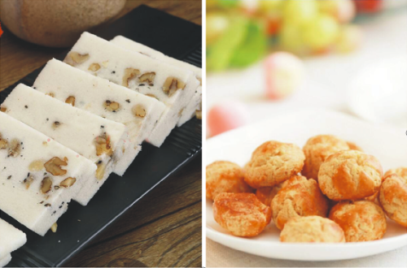
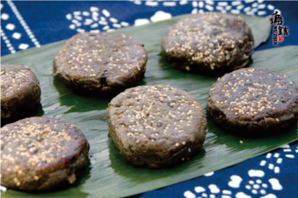
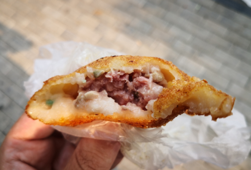
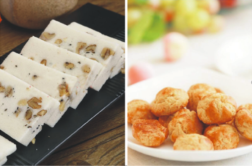
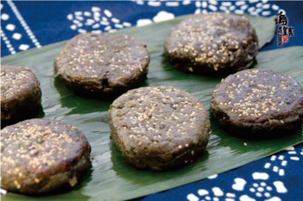
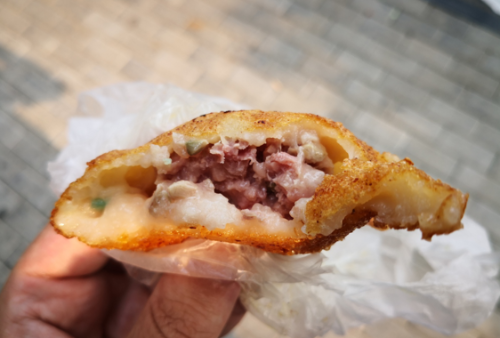

“古有梧桐，凤凰来栖”。桐乡因古时遍栽梧桐树，寓意“梧桐之乡”而得名。
桐乡地处浙北杭嘉湖平原腹地，居上海、杭州、苏州“金三角”中心。桐乡地势平坦，河网密布 ，四季分明，环境优美，是典型的江南水乡。素有“鱼米之乡、丝绸之府、百花地面、文化之邦”的美誉。
桐乡历史悠久，文化底蕴深厚。在桐乡，马家浜文化、良渚文化、运河文化、古镇文化交相辉映，孕育了张履祥、吕留良、陆费逵、太虚、茅盾、丰子恺、钱君匋、徐肖冰、木心等一大批名人巨匠。近年来，桐乡先后获得全国文化模范市、中国民间艺术（漫画）之乡、中国书法之乡、中国摄影之乡、中国排舞之乡、中国文学之乡、中国武术之乡、中国新戏剧之乡等荣誉称号，是乌镇戏剧节、子恺杯全国漫画大展、丰子恺中外散文奖、茅盾文学新人奖、“徐肖冰”全国摄影大展的举办地和颁奖地，也吸引到浙江传媒学院的落户。
桐乡是世界互联网大会永久举办地，乌镇峰会已成为中国与世界互联互通的国际平台和国际互联网共享共治的中国平台。借助世界互联网大会的举办，桐乡成为全国网络基础设施最好的地区之一，公共场所免费WIFI基本实现全覆盖，5G网络率先试点，是全国首个获批建设国际互联网数据专用通道的县市。
乌镇，1300多年历史的江南水乡古镇，国家AAAAA级景区，中国首批十大历史文化名镇和中国魅力名镇之一，曾被评为“欧洲游客最喜爱的中国旅游景区”。古老的京杭大运河穿镇而过，镇区有十字形的水系划分为东南西北四栅。>>>了解详细
从公元872年建镇以来，乌镇镇名未变，镇址未变，水系未变，生活方式未变，传统建筑经百年风雨，依旧保存完好。2006年末，乌镇被列入《中国世界文化遗产预备名单》重设目录。作为中国保护面积最大的古镇，乌镇浓厚的人文积淀展现出东方古老文明的无穷魅力。景区内保存有精美的明清建筑近四十万平方米，纵横交叉的河道近万米。街区内的名胜古迹、手工作坊、经典展馆、宗教建筑、民俗风情、休闲场所让人流连忘返，自然风光美不胜收，泛光夜景气势磅礴。各类风格的民宿特色和度假酒店，是休闲度假和商务会议首选之地。
福严寺景区位于凤鸣街道西部，距市府所在地约十二公里，景区占地近十万平方米。其中福严佛教文化苑，占地面积四万多平方米，以佛教文化为内涵，江南园林和福严奇石文化为特色，由浙江省旅游局佛教文化专家何思源先生设计，是一座具有佛教哲理的水乡园林。
福严文化苑与景区内福严寺一脉相通，地域相连，相辅相成，因此我们此番不但能看到文化苑的秀丽景色，也能一饱千年古刹福严寺的眼福。福严寺建寺悠久，历史上规模宏大，香火鼎盛，是南朝四百八十寺之一。由台山的日东熹禅师开山，距今1500多年，唐乾符三年（876年），唐僖宗题额为“千乘禅院“，北宋大中祥符元年（1008年）改名为福严禅寺。
 




